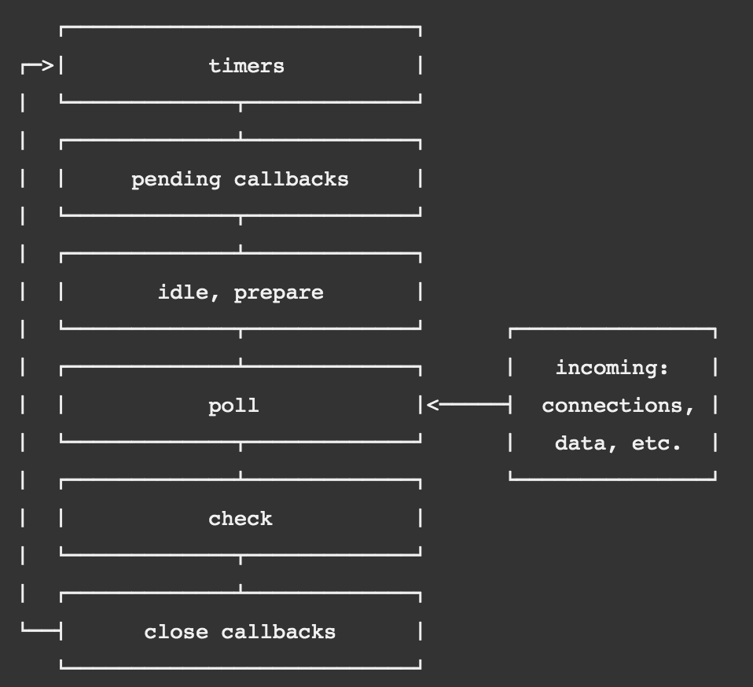

Node.js Internals
Blocking I/O and the Event Loop
Agenda
- Javascript
- Blocking vs non-blocking
- Types of asynchronous functions
- The Event Loop
Blocking vs Non-Blocking
Javascript is a single-threaded programming language
This means there is only one piece of code is executing at time
So, all other operations come to a halt until it finishes
These operations are called Blocking or Synchronous
To make everything work, and avoid halting the runtime while waiting for I/O operations, JS can defer the execution of a script until their execution is demanded by the runtime
These are called Non-Blocking or Asynchronous
When running non-blocking code, the Node.js process will be able to execute additional Javascript while it waits for the operation to finish in the background
Blocking code
Writing a file synchronously
fs.writeFileSync('./test.txt', 'write this to file');
Reading a file synchronously
const content = fs.readFileSync('./test.txt');
Parsing JSON
const json = JSON.parse('{"key": "value""}');
Non-Blocking code
Writing a file Asynchronously
fs.writeFile('./test.txt', 'write this to file',
function doneCallback(err) {
console.log(err);
});
Reading a file synchronously
fs.readFile('./test.txt',
function doneCallback(err, contents) {
console.log(contents);
});
How those async calls work?
Node.js uses libuv to handle disk and network interactions assynchornously
libuv is a C library that uses polling features of the OS to make asynchronous calls possible
Types of async operations
Network and File System I/O
Timers
Next tick queue
Blocking vs Non-blocking in practice
blocking.js
non-blocking.js
fibonnaci-server.js
Fibonacci server
Running a few requests that block the event loop
artillery quick -d 5 -r 1 \
-p "{\"n\": 100000, \"async\": false}" \
http://localhost:3000/
Fibonacci server
And running the same requests with a implementation that doesn't block the event loop:
artillery quick -d 5 -r 1 \
-p "{\"n\": 100000, \"async\": true}" \
http://localhost:3000/
Fibonacci server
Scenarios launched: 5
Scenarios completed: 5
Requests completed: 5
RPS sent: 1.12
Request latency:
min: 89.5
max: 99.2
median: 94.7
p95: 99.2
p99: 99.2
Scenario counts:
0: 5 (100%)
Codes:
200: 5
Scenarios launched: 5
Scenarios completed: 5
Requests completed: 5
RPS sent: 1.12
Request latency:
min: 101.7
max: 127.8
median: 105.1
p95: 127.8
p99: 127.8
Scenario counts:
0: 5 (100%)
Codes:
200: 5
It doesn't look that bad
In fact, the assynchronous options seems to have worse performance
Fibonacci server
So, let's try to do a load test on the sync server:
artillery quick -d 3 -r 800 \
-p "{\"n\": 50000, \"async\": false}" \
http://localhost:3000/
Fibonacci server
Scenarios launched: 2400
Scenarios completed: 1664
Requests completed: 1664
RPS sent: 28.06
Request latency:
min: 67.1
max: 78501.6
median: 21674.1
p95: 76854
p99: 78256.4
Scenario counts:
0: 2400 (100%)
Codes:
200: 1664
Errors:
ECONNRESET: 1
EPIPE: 1
ETIMEDOUT: 734
interval took 1.005 seconds
interval took 1.004 seconds
interval took 1.001 seconds
interval took 1 seconds
interval took 2.33 seconds
interval took 5.115 seconds
interval took 3.603 seconds
interval took 3.353 seconds
interval took 3.359 seconds
interval took 3.4 seconds
interval took 3.092 seconds
interval took 3.238 seconds
interval took 3.319 seconds
interval took 1 seconds
interval took 1.001 seconds
interval took 1.002 seconds
Fibonacci Server
Now we started to see some of the issues with the event loop blocking:
- The first request took 150ms to finish, while the last one took ~40seconds.
- The interval timer running in the background took up to 5 seconds to run instead of the configured 1s.
- The event loop stopped responding to connection requests and some of the requests ended with a timeout
Fibonacci server
Then, what if we run the same load test on the async server?
artillery quick -d 3 -r 800 \
-p "{\"n\": 50000, \"async\": true}" \
http://localhost:3000/
Fibonacci server
Scenarios launched: 2400
Scenarios completed: 2400
Requests completed: 2400
RPS sent: 36.8
Request latency:
min: 11666.9
max: 61986
median: 60635.6
p95: 61941.1
p99: 61975
Scenario counts:
0: 2400 (100%)
Codes:
200: 2400
interval took 1.002 seconds
interval took 1.064 seconds
interval took 1.013 seconds
interval took 1.066 seconds
interval took 1.02 seconds
interval took 1.055 seconds
interval took 1.002 seconds
interval took 1.009 seconds
No request failed and the average latency improved a lot
But, like the first test, the min latency is still quite high compared to the sync server
Blocking code execution drastically reduces the overall performance of the application and event loop execution.
With non-blocking calls the reliability of the server is better, but performance still isn't good if you are doing cpu intensive tasks
Node.js strenght is on handling async calls without cpu intesive tasks
Blocking vs Non-blocking in practice
blocking.js
non-blocking.js
fibonnaci-server.js
timers.js
Timers
Timers are global functions used to execute code after a set period of time
Timers
setImmediate(callback) : execute callback on the next event loop iterationsetTimeout(callback, time) : execute callback aftertime milisecondssetInterval(callback, time) : execute callback an infinite amount of times aftertime milisecondsprocess.nextTick(callback) : not technically a timer, but also a way of scheduling a function execution in the future
Timers in practice
2019-05-29T19:31:06.950Z next tick
2019-05-29T19:31:06.958Z zero timeout
2019-05-29T19:31:06.958Z immediate
2019-05-29T19:31:07.954Z interval
2019-05-29T19:31:07.954Z 1s timeout
2019-05-29T19:31:07.955Z block interval start
2019-05-29T19:31:12.723Z block interval end
2019-05-29T19:31:13.727Z interval
2019-05-29T19:31:13.730Z block interval start
2019-05-29T19:31:32.643Z block interval end
2019-05-29T19:31:33.646Z interval
2019-05-29T19:31:33.646Z block interval start
Timers
A zero wait
The wait time is never exact
Blocking the event loop blocks delays the execution of timers
The 1s interval timer only got scheduled after the blocking interval ended
Why?
Because of how the event loop executes!
The Event Loop
The event loop is what allows Node.js to perform non-blocking I/O operations — despite the fact that JavaScript is single-threaded — by offloading operations to the system kernel whenever possible.
Event Loop Phases
Event Loop Phases
Each phase has a FIFO queue of callbacks
Callbacks are executed until the queue is exausted or the maximum number of callbacks is achieved
Timers phase
Executes callbacks scheduled by
Pending Callbacks phase
Executes callbacks for some system operations that are delayed, such as type of TCP errors
Poll phase
Process events in poll queue
Calculate if needs to block for I/O
Check for timers and wrap back to Timers or go to Check phases
Check phase
'Do this before any new stuff' phase
Executes callbacks for
Close Callbacks phase
If a socket or handle is closed abruptly (e.g. socket.destroy()), the 'close' event will be emitted here
process.nextTick()
Not technically part of the event loop
The next tick queue is processed after the current operation ends
All callbacks from the next tick queue are executed before the event loop continues
It is dangerous in a way it can starve Node.js when called recursively
process.nextTick()
Allow users to handle errors, cleanup any then unneeded resources, or perhaps try the request again before the event loop continues
Allow a callback to run after the call stack has unwound but before the event loop continues
// this finishes immediately
const server = net.createServer(() => {}).listen(8080);
// if the listen call doesn't wait to emit the events
// the listening callback wouldn't be registered yet
server.on('listening', () => {});